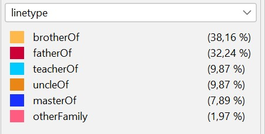
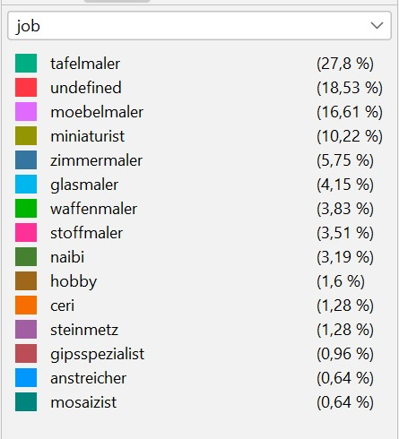

 Hier kommt der Text zum Netzwerk.[1] Die Zahlen basieren auf der bisher einzigen umfassenden computergestützten Aufarbeitung des Catasto-Materials des Jahres 1427.[1] Jacobsen, Werner. „Die Maler von Florenz zu Beginn der Renaissance“. Deutscher Kunstverlag, 2001. S. 28